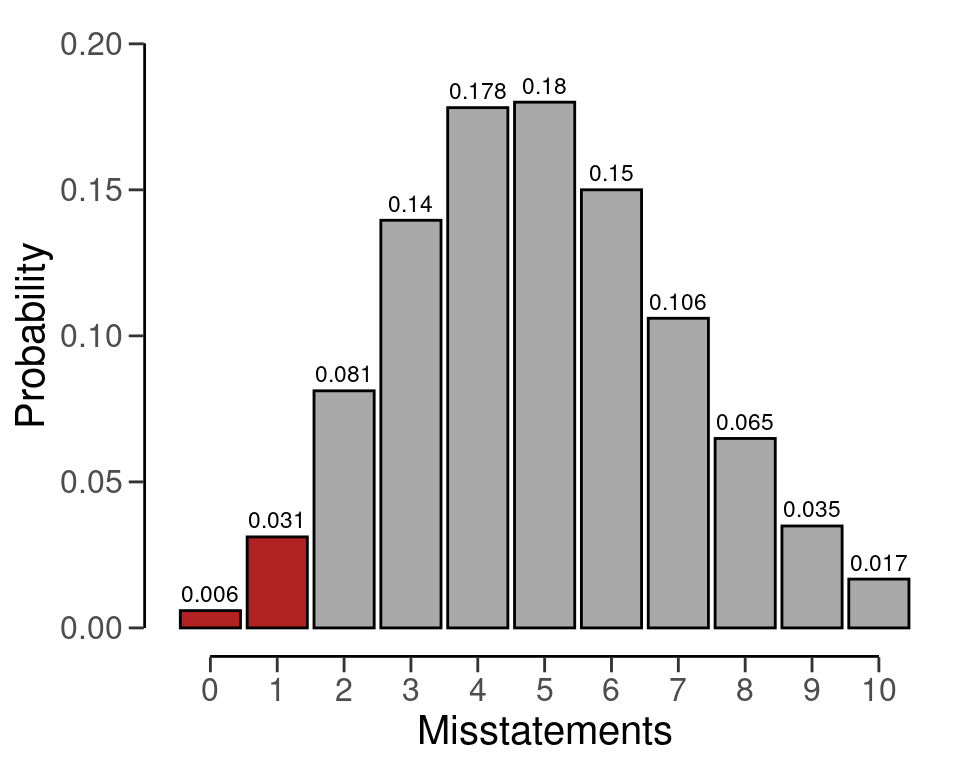
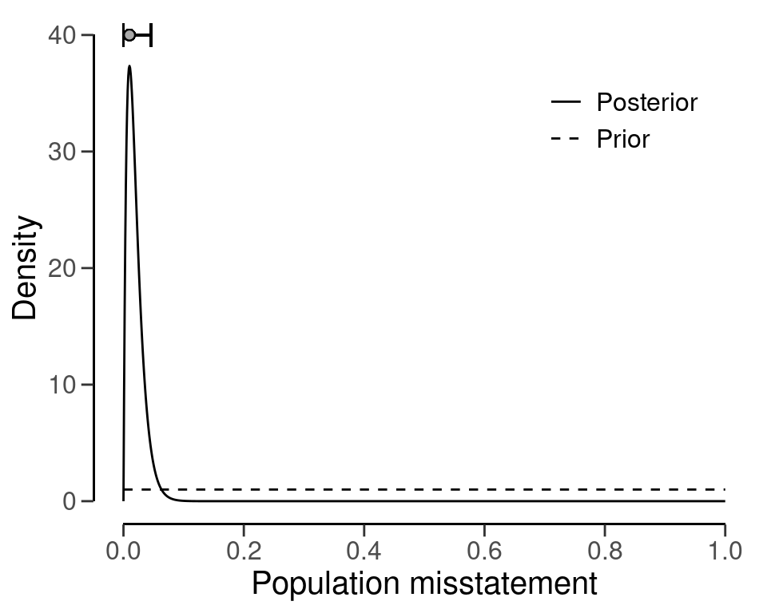

6 Evaluation
You are reading the work-in-progress first edition of Statistical Auditing with R. This chapter is currently a dumping ground of ideas, and it is incomplete.
The final step in the audit sampling process, and the bread and butter of statistical audit sampling, is evaluating the sample. During this stage, the auditor considers the audit evidence gathered from the sample and combines it with the audit evidence obtained during earlier stages of the audit to form their opinion of the population.
Just as with planning a sample, evaluating a sample requires knowledge of the circumstances that determine whether the population should be accepted or rejected, which are referred to as sampling objectives. Sampling objectives can be divided into two main categories:
- Hypothesis testing: The goal of the sample is to obtain evidence for or against the claim that the misstatement in the population is lower than a given value (i.e., the performance materiality).
- Estimation: The goal of the sample is to obtain an accurate estimate of the misstatement in the population with a certain precision.

When an auditor must evaluate an audit sample, they can choose between two approaches: evaluating a stratified audit sample or a non-stratified audit sample. The former involves dividing the population into subgroups based on specific characteristics, such as location or item type, and selecting a sample from each subgroup. The latter, on the other hand, involves selecting a sample from the entire population without considering any categorical characteristics. In this chapter, we will explore non-stratified audit sampling, while the next chapter will cover stratified audit sampling.
Non-stratified sampling is typically used when the population is considered homogenous, meaning there are no significant differences between subgroups. This approach is also suitable when the auditor doesn’t need to consider differences between subgroups. For example, if an auditor is reviewing a company’s inventory using non-stratified sampling, they may choose a random sample of items from the entire inventory without dividing it based on any subgroups. Similarly, if the auditor is conducting an audit of a small business’s general ledger, they may select a sample of entries without dividing them based on any categorical features.
To begin, the auditor needs to first decide whether they will evaluate based on summary statistics derived from a sample (i.e., as 1 misstatement in 100 items) or by providing a raw data set to calculate the misstatements. For ease of understanding, we will first explain the fundamental principles of evaluation using summary statistics from a sample.
6.1 Classical Evaluation
Classical evaluation is commonly used to draw conclusions about a population on the basis of an audit sample. It involves the use of confidence intervals to quantify the uncertainty associated with a sample estimate and the use of p-values to quantify evidence against the hypothesis of intolerable misstatement.
Confidence intervals are a critical component of classical inference, as they help to determine the accuracy of a sample estimate. For instance, if an auditor wishes to estimate the degree of misstatement in a tax return, they can use classical inference to calculate a confidence interval for the population misstatement. This confidence interval provides a range of values within which the true misstatement of the population is expected to lie. By using this range, auditors can make informed decisions about the accuracy of the sample estimate and determine the potential impact of the misstatement on government taxes.
For example, suppose an auditor wants to estimate the misstatement in a population based on a sample of 100 items containing 1 misstatement. This can be done in jfa via the evaluation() function by specifying x = 1 and n = 100. The output shows that the most likely error in the population is estimated to be 1 / 100 = 1 percent and that the 95 percent (one-sided) confidence interval ranges from 0 percent to 4.74 percent. Contrary to popular belief, the correct interpretation of a 95 percent confidence interval is: “If we were to repeat the experiment over and over, then 95 percent of the time the confidence interval contain the true misstatement rate” (Hoekstra et al., 2014).
evaluation(x = 1, n = 100, method = "binomial")
#>
#> Classical Audit Sample Evaluation
#>
#> data: 1 and 100
#> number of errors = 1, number of samples = 100, taint = 1
#> 95 percent confidence interval:
#> 0.00000000 0.04655981
#> most likely estimate:
#> 0.01
#> results obtained via method 'binomial'Classical hypothesis testing, on the other hand, uses p-values to decide whether or not to reject a certain hypothesis about the population. For instance, if an auditor wants to test whether the population contains misstatement less than 5 percent (the value of the performance materiality is based on existing rules and regulations), they would formulate the hypotheses \(H_1:\theta<0.05\) and \(H_0:\theta\geq0.05\). The significance level is set at 0.05, which is equal to the audit risk of 5 percent. This means that a p-value less than 0.05 would be sufficient to reject the hypothesis of intolerable misstatement \(H_0\).
In addition to estimation, a classical hypothesis test using the p-value can be performed in jfa by also specifying materiality = 0.05 in the evaluation() function. In addition to the confidence interval, the output now also shows that the p-value is 0.040428, which is lower than 0.05. This implies that the hypothesis \(H_0\) can be rejected at a significance level of 5 percent. Hence, the auditor is able to conclude that the sample provides sufficient evidence to reduce the audit risk to an appropriately low level to conclude that the population does not contain misstatements equal to, or above, 5 percent.
eval <- evaluation(materiality = 0.05, x = 1, n = 100, method = "binomial")
eval
#>
#> Classical Audit Sample Evaluation
#>
#> data: 1 and 100
#> number of errors = 1, number of samples = 100, taint = 1, p-value =
#> 0.037081
#> alternative hypothesis: true misstatement rate is less than 0.05
#> 95 percent confidence interval:
#> 0.00000000 0.04655981
#> most likely estimate:
#> 0.01
#> results obtained via method 'binomial'The exact definition of the p-value is “the probability of observing the data (or more extreme) given the truth of the hypothesis of intolerable misstatement”. The p-value of 0.040428 can be visualized via the plot() function.
plot(eval)
6.2 Bayesian Evaluation
In classical inference, we use confidence intervals to quantify the uncertainty of our estimate. In Bayesian inference, we use credible intervals for this purpose. To do Bayesian inference, we need to specify a prior distribution, which is our best guess about what the misstatement might look like before we actually collect any data. Then, we combine this prior with the information from our sample to get a posterior distribution.
We can use this posterior distribution to estimate the most likely misstatement in the population and the range of values that we are 95 percent confident the true value lies within. The classical confidence interval is often misinterpreted as a Bayesian credible interval. That is, a Bayesian 95 percent credible interval can be intuitively interpreted as: “There is a 95 percent probability that the misstatement falls within the credible interval”.
For example, if we have a uniform beta(1, 1) prior, sample of 100 units and we find that one contains a misstatement, we can estimate that the most likely misstatement in the population is 1 percent. Using the posterior distribution, we can calculate that there is a 95 percent probability that the true misstatement rate is between 0 percent and 4.61 percent. The small difference between the classical and default Bayesian results is due to the uniform beta(1, 1) prior distribution. Classical results can be emulated by constructing a prior with method = "strict" in the auditPrior() function. Remember that any call to evaluation() can be done in a Bayesian way by specifying a prior distribution. Hence, the only difference between the call for a classical analysis and the call for a Bayesian analysis is the use of a prior constructed via a call to auditPrior().
prior <- auditPrior(materiality = 0.05, method = "default", likelihood = "binomial")
eval <- evaluation(x = 1, n = 100, prior = prior)
eval
#>
#> Bayesian Audit Sample Evaluation
#>
#> data: 1 and 100
#> number of errors = 1, number of samples = 100, taint = 1
#> 95 percent credible interval:
#> 0.00000000 0.04610735
#> most likely estimate:
#> 0.01
#> results obtained via method 'binomial' + 'prior'The posterior distribution with the most likely misstatement and credible interval can be visualized with the plot() function.
plot(eval)
Classical inference relies on p-values to assess the strength of evidence against the hypothesis of intolerable misstatement, while Bayesian inference uses the Bayes factor to measure evidence in support or against the hypotheses of tolerable or intolerable misstatement. Bayesian hypothesis testing uses the Bayes factor, either \(BF_{10}\) or \(BF_{01}\), to draw conclusions about the evidence provided by the sample in favor of one of the two hypotheses, \(H_1\) or \(H_0\).
The Bayes factor is an intuitive measure of statistical evidence that allows auditors to interpret the likelihood of the data occurring under either hypothesis. For example, if the value of \(BF_{10}\) is 10 (as outputted by the evaluation() function), it means that the data are 10 times more likely to have arisen under \(H_1\) than under \(H_0\). A Bayes factor \(BF_{10}\) greater than 1 indicates evidence for \(H_1\) and against \(H_0\), while a Bayes factor \(BF_{10}\) less than 1 indicates evidence for \(H_0\) and against \(H_1\). The evaluation() function returns \(BF_{10}\) by default, but \(BF_{01}\) can be computed as the inverse of \(BF_{10}\) (i.e., \(\frac{1}{BF_{10}}\)).
Let’s take the example of an auditor who wants to verify whether a population contains less than 5 percent misstatement, which corresponds to the hypotheses \(H_1:\theta<0.05\) and \(H_0:\theta\geq0.05\). The auditor has taken a sample of 100 items, and only one was found to contain a misstatement. Assuming a default beta(1,1) prior distribution, the following code evaluates the sample using a Bayesian hypothesis test and the Bayes factor. The materiality = 0.05 argument specifies the materiality threshold for the audit.
evaluation(materiality = 0.05, x = 1, n = 100, prior = prior)
#>
#> Bayesian Audit Sample Evaluation
#>
#> data: 1 and 100
#> number of errors = 1, number of samples = 100, taint = 1, BF₁₀ =
#> 515.86
#> alternative hypothesis: true misstatement rate is less than 0.05
#> 95 percent credible interval:
#> 0.00000000 0.04610735
#> most likely estimate:
#> 0.01
#> results obtained via method 'binomial' + 'prior'The Bayes factor for this case is \(BF_{10}=515\), indicating that the sample data is 515 times more likely to occur under the hypothesis of tolerable misstatement than under the hypothesis of material misstatement. To calculate this Bayes factor, we use the prior distribution and the posterior distribution. The Bayes factor is defined as the change from prior-to-posterior odds. To begin, we calculate the prior probability of the hypothesis of tolerable misstatement under the beta(1,1) prior distribution.
prior.prob.h1 <- pbeta(0.05, shape1 = 1, shape2 = 1)
prior.prob.h1
#> [1] 0.05The probability of intolerable misstatement hypothesis is the complement of the probability of tolerable misstatement hypothesis. To put it simply, it is just one minus the prior probability of the hypothesis of tolerable misstatement.
prior.prob.h0 <- 1 - prior.prob.h1
prior.prob.h0
#> [1] 0.95The prior odds is defined as the ratio of the prior probabilities.
prior.odds.h1 <- prior.prob.h1 / prior.prob.h0
prior.odds.h1
#> [1] 0.05263158To compute the posterior probability of the hypothesis of tolerable misstatement, we can use the posterior distribution. Additionally, we can obtain the posterior probability of the hypothesis of intolerable misstatement by subtracting the posterior probability of tolerable misstatement from one. Finally, the ratio of the posterior probabilities is known as the posterior odds.
post.prob.h1 <- pbeta(0.05, shape1 = 1 + 1, shape2 = 1 + 100 - 1)
post.prob.h0 <- 1 - post.prob.h1
post.odds.h1 <- post.prob.h1 / post.prob.h0
post.odds.h1
#> [1] 27.15064The Bayes factor can be computed as the ratio of posterior odds and prior odds and equals 515.86.
bf10 <- post.odds.h1 / prior.odds.h1
bf10
#> [1] 515.8621It is worth noting that this Bayes factor is remarkably high, considering the limited data that has been observed. However, this high value is not unexpected since the Bayes factor depends on the prior distribution of the parameters in the statistical model (in this case, \(\theta\)). Typically, when the prior distribution is very conservative, as is the case with the beta(1, 1) prior created with method = 'default', the Bayes factor tends to overestimate the evidence in favor of the hypothesis of tolerable misstatement. To mitigate this dependence, you can use a prior distribution that is impartial towards the hypotheses by using method = "impartial" in the auditPrior() function (Derks et al., 2022).
prior <- auditPrior(materiality = 0.05, method = "impartial", likelihood = "binomial")
evaluation(materiality = 0.05, x = 1, n = 100, prior = prior)
#>
#> Bayesian Audit Sample Evaluation
#>
#> data: 1 and 100
#> number of errors = 1, number of samples = 100, taint = 1, BF₁₀ =
#> 47.435
#> alternative hypothesis: true misstatement rate is less than 0.05
#> 95 percent credible interval:
#> 0.00000000 0.04110834
#> most likely estimate:
#> 0.0088878
#> results obtained via method 'binomial' + 'prior'The analysis above was conducted using an impartial prior. The resulting output indicates that \(BF_{10}=47\), which strongly supports \(H_1\). This hypothesis suggests that the population contains misstatements lower than 5 percent (tolerable misstatement), assuming impartiality. Both prior distributions resulted in persuasive Bayes factors, making the results reliable regardless of the prior distribution selected. As a result, the auditor can confidently assert that the sample data provides convincing evidence that the population does not contain any material misstatement.
6.3 Using a Data Set
Previously, we relied on summary statistics obtained from a sample to carry out evaluations. However, it is also possible to supply the evaluation() function with a data set. Doing so allows the function to calculate misstatements based on the booked and audited values of individual items.
To demonstrate how this works, we will use the allowances data set that comes with the jfa package. This data set includes 3500 financial statement line items, each with a booked value (bookValue) and an audited (true) value (auditValue) for illustrative purposes. Since this example focuses on the evaluation stage of an audit, the sample is already identified within the data set. For this example, the performance materiality has been set at 5 percent.
data(allowances)
head(allowances)
#> item branch bookValue auditValue times
#> 1 1 12 1600 1600 1
#> 2 2 12 1625 NA 0
#> 3 3 12 1775 NA 0
#> 4 4 12 1250 1250 1
#> 5 5 12 1400 NA 0
#> 6 6 12 1190 NA 0When evaluating an audit sample using a data set, it is necessary to specify the data, values, and values.audit arguments in the function. The input for these arguments should be the name of the relevant column in data. The call below evaluates the allowances sample using a classical evaluation procedure. In this case, the output shows that the estimate of the misstatement in the population is 15.77 percent, with the 95 percent (one-sided) confidence interval ranging from 0 percent to 17.5 percent.
x <- evaluation(materiality = 0.05, data = allowances, values = "bookValue", values.audit = "auditValue", times = "times")
summary(x)
#>
#> Classical Audit Sample Evaluation Summary
#>
#> Options:
#> Confidence level: 0.95
#> Materiality: 0.05
#> Hypotheses: H₀: Θ >= 0.05 vs. H₁: Θ < 0.05
#> Method: poisson
#>
#> Data:
#> Sample size: 1604
#> Number of errors: 401
#> Sum of taints: 252.9281046
#>
#> Results:
#> Most likely error: 0.15769
#> 95 percent confidence interval: [0, 0.175]
#> Precision: 0.017311
#> p-value: 16.4 Exercises
- Evaluate a sample of \(n = 30\) items containing \(k = 2\) misstatement. Use the classical approach.
Click to reveal answer
evaluation(n = 30, x = 2, method = "binomial")
#>
#> Classical Audit Sample Evaluation
#>
#> data: 2 and 30
#> number of errors = 2, number of samples = 30, taint = 2
#> 95 percent confidence interval:
#> 0.000000 0.195326
#> most likely estimate:
#> 0.066667
#> results obtained via method 'binomial'